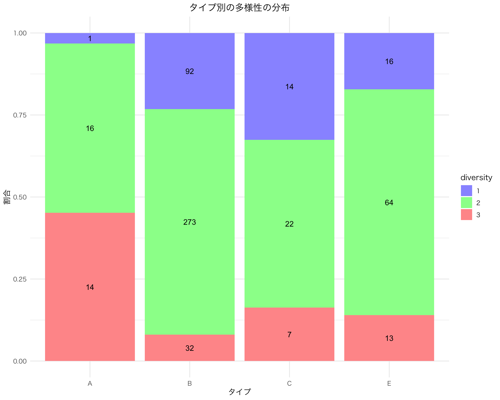
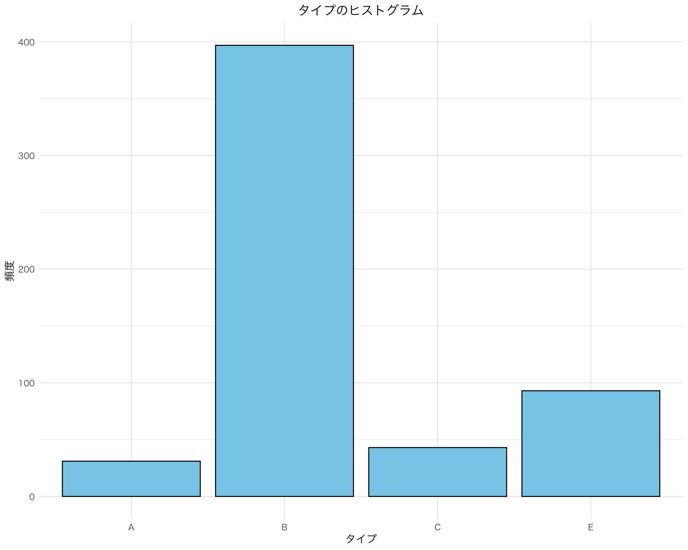

Warning: The dot-dot notation (`..count..`) was deprecated in ggplot2 3.4.0.
ℹ Please use `after_stat(count)` instead.

library(ggplot2)ggplot(df, aes(x = type)) +geom_histogram(stat ="count", fill ="skyblue", color ="black") +theme_minimal() +labs(title ="タイプのヒストグラム",x ="タイプ",y ="頻度") +theme(text =element_text(family ="HiraKakuPro-W3"),plot.title =element_text(hjust =0.5))
Warning in geom_histogram(stat = "count", fill = "skyblue", color = "black"):
Ignoring unknown parameters: `binwidth`, `bins`, and `pad`

明らかに type A は diversity 1 が少ない．
1.2 散布図
ggplot(df, aes(x = BP, y = diversity, color = type)) +geom_point() +labs(title ="BPとDiversityの散布図", x ="BP", y ="Diversity", color ="Type") +theme_minimal() +xlim(0, 2.5)